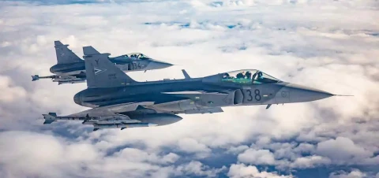
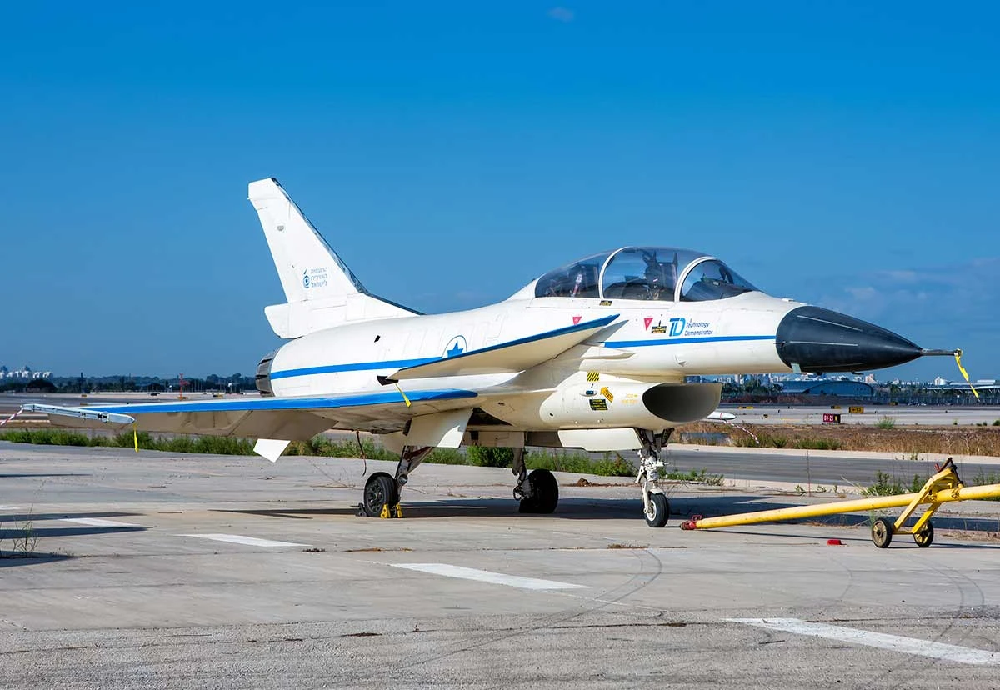
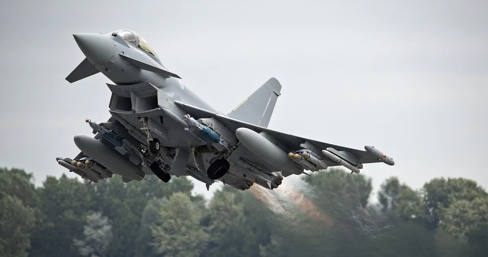
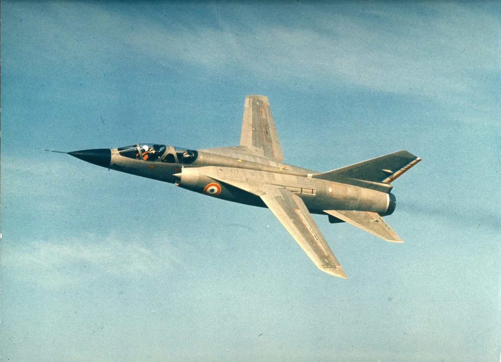
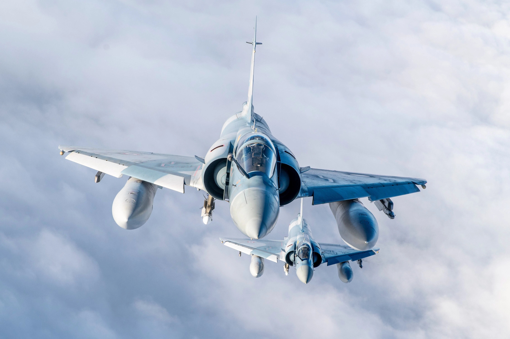
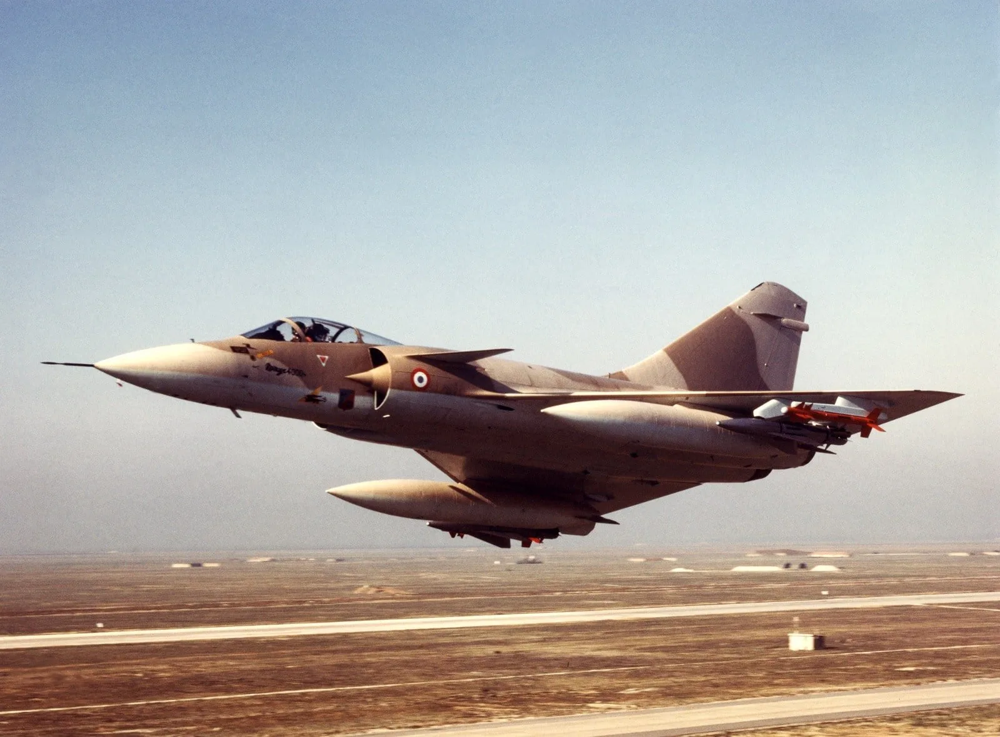
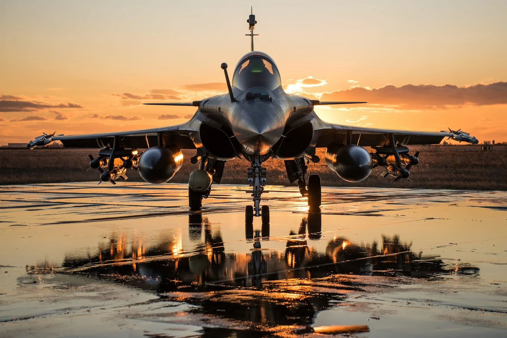
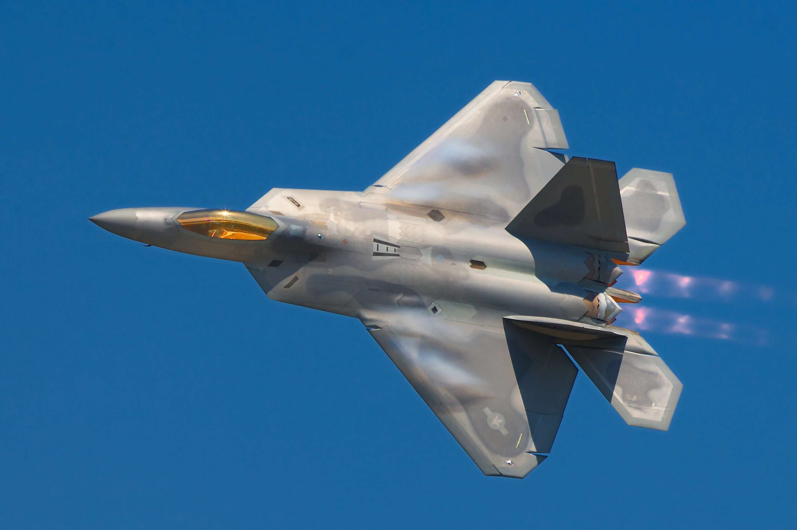

Gripen

Le Saab Gripen est un avion de chasse léger et polyvalent, conçu pour des missions multirôles de défense. Alliant une grande maniabilité à une technologie de pointe, il est équipé d'un radar avancé et d'un cockpit numérique, ce qui lui permet d'effectuer des missions de combat air-air et air-sol avec efficacité. Son faible coût d'exploitation, sa consommation de carburant optimisée et sa capacité à opérer depuis des pistes courtes en font un choix flexible et économique. Le Gripen est idéal pour les utilisateurs privés en quête d'un avion de chasse moderne,
60M - 80M €
En savoir plus
IAI Lavi

Le IAI Lavi est un avion de chasse multirôle développé par Israel Aerospace Industries. Conçu pour des missions de supériorité aérienne et d'attaque au sol, il est équipé de systèmes avioniques avancés et d'un radar performant. Le Lavi offre une grande maniabilité et une capacité de survie élevée grâce à ses contre-mesures électroniques. C'est un choix idéal pour les utilisateurs privés recherchant un avion de chasse moderne et performant.
50M - 70M €
En savoir plus
Typhoon

Le Eurofighter Typhoon est un avion de chasse multirôle développé par un consortium européen. Conçu pour des missions de supériorité aérienne et d'attaque au sol, il est équipé de systèmes avioniques de pointe et d'un radar AESA. Le Typhoon offre une grande maniabilité et une capacité de survie élevée grâce à ses contre-mesures électroniques. C'est un choix idéal pour les utilisateurs privés recherchant un avion de chasse moderne et performant.
80M - 100M €
En savoir plus
Mirage G

Le Mirage G est un avion de chasse développé par Dassault Aviation. Conçu pour des missions de supériorité aérienne et d'attaque au sol, il est équipé de systèmes avioniques avancés et d'un radar performant. Le Mirage G offre une grande maniabilité et une capacité de survie élevée grâce à ses contre-mesures électroniques. C'est un choix idéal pour les utilisateurs privés recherchant un avion de chasse moderne et performant.
70M - 90M €
En savoir plus
Mirage 2000

Le Mirage 2000 est un avion de chasse multirôle développé par Dassault Aviation. Conçu pour des missions de supériorité aérienne et d'attaque au sol, il est équipé de systèmes avioniques avancés et d'un radar performant. Le Mirage 2000 offre une grande maniabilité et une capacité de survie élevée grâce à ses contre-mesures électroniques. C'est un choix idéal pour les utilisateurs privés recherchant un avion de chasse moderne et performant.
60M - 80M €
En savoir plus
Mirage 4000

Le Mirage 4000 est un avion de chasse multirôle développé par Dassault Aviation. Conçu pour des missions de supériorité aérienne et d'attaque au sol, il est équipé de systèmes avioniques avancés et d'un radar performant. Le Mirage 4000 offre une grande maniabilité et une capacité de survie élevée grâce à ses contre-mesures électroniques. C'est un choix idéal pour les utilisateurs privés recherchant un avion de chasse moderne et performant.
70M - 90M €
En savoir plus
Rafale

Le Dassault Rafale est un avion de chasse multirôle développé par Dassault Aviation. Conçu pour des missions de supériorité aérienne et d'attaque au sol, il est équipé de systèmes avioniques de pointe et d'un radar AESA. Le Rafale offre une grande maniabilité et une capacité de survie élevée grâce à ses contre-mesures électroniques. C'est un choix idéal pour les utilisateurs privés recherchant un avion de chasse moderne et performant.
90M - 110M €
En savoir plus
F-22

Le Lockheed Martin F-22 est un avion de chasse furtif développé par Lockheed Martin. Conçu pour des missions de supériorité aérienne, il est équipé de systèmes avioniques de pointe et d'un radar AESA. Le F-22 offre une grande maniabilité et une capacité de survie élevée grâce à ses contre-mesures électroniques. C'est un choix idéal pour les utilisateurs privés recherchant un avion de chasse moderne et performant.
150M - 180M €
En savoir plus
F-35

Le Lockheed Martin F-35 est un avion de chasse furtif multirôle développé par Lockheed Martin. Conçu pour des missions de supériorité aérienne et d'attaque au sol, il est équipé de systèmes avioniques de pointe et d'un radar AESA. Le F-35 offre une grande maniabilité et une capacité de survie élevée grâce à ses contre-mesures électroniques. C'est un choix idéal pour les utilisateurs privés recherchant un avion de chasse moderne et performant.
120M - 150M €
En savoir plus